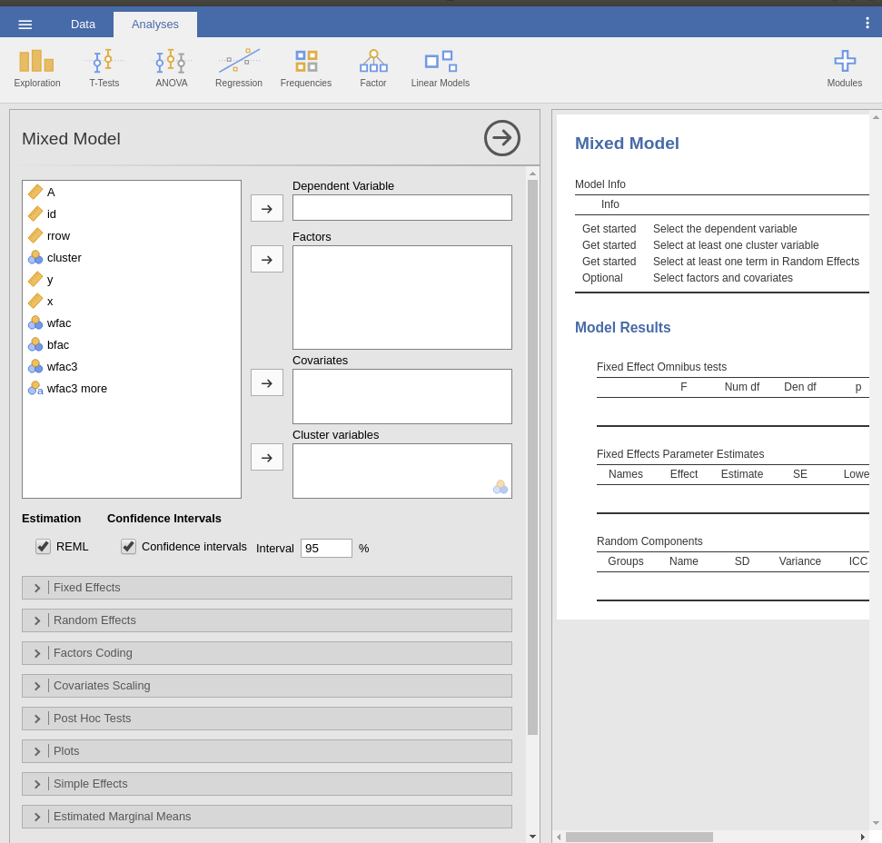
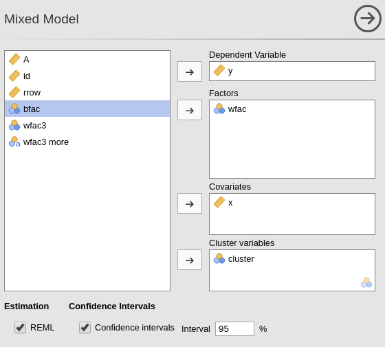
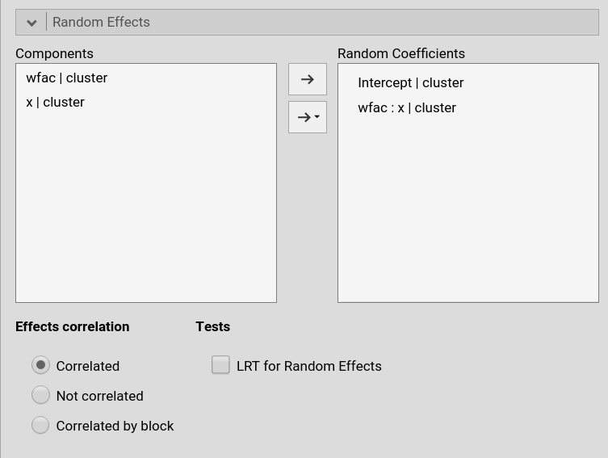
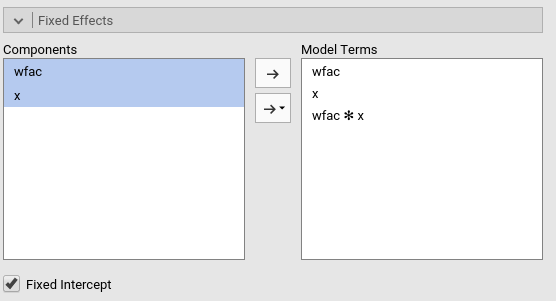
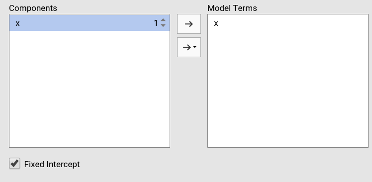
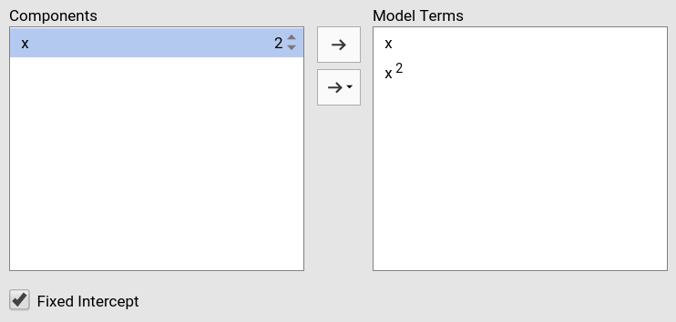
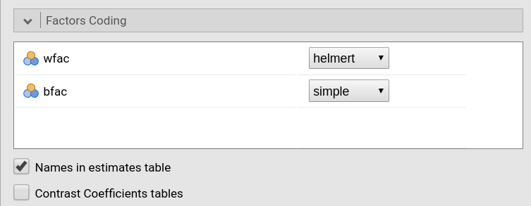
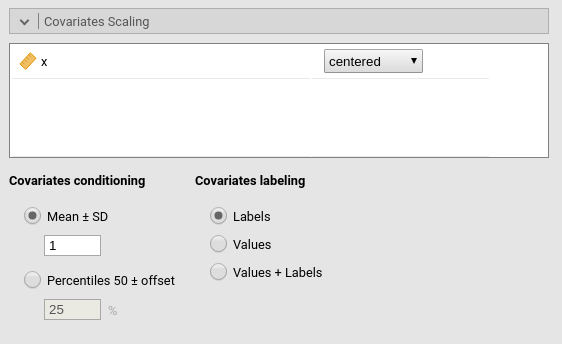
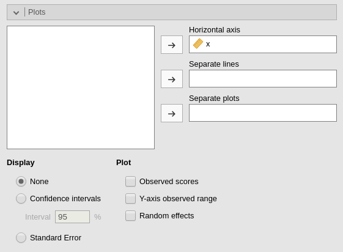
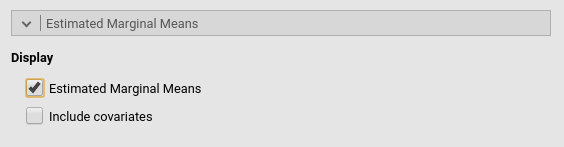

Mixed Models module
GALMj version ≥ 1.5.0
Mixed Linear Models module of the GAMLj suite for jamovi

The module estimates a mixed linear model with categorial and/or continuous variables, with options to facilitate estimation of interactions, simple slopes, simple effects, post-hoc, etc. In this page you can find some hint to get started with the mixed models module. For more information about how to module works, please check the technical details
Module
The module can estimates REML and ML linear mixed models for any combination of categorical and continuous variables, thus providing an easy way of obtaining multilevel or hierarchical linear models for any combination of independent variables types.
Estimates
The module provides a parameter estimates of the fixed effects, the random variances and correlation among random coefficients.
Variables definition follows jamovi standards, with categorical independent variables defined in “fixed factors” and continuous independent variables in “covariates”.

The grouping variable is simply set by putting the corresponding variable(s) into cluster. In this version, multiple clustering variables are possible, but not combinations of classifications ( see Technical Details ).
Confidence intervals for the parameters estimates and REML or ML can be chosen.
The actual estimation occurs when the dependent variable, the clustering variable and at least one random coefficient (random effect) has been selected.
Random effects

Random effects across clustering variables are automatically prepared by the module following R lmer() standards: term | cluster indicates that the coefficient associated with term is random across cluster.
By default the module assumes correlated random effects. All the effects varying across the same cluster variable appearing in the Random coefficients will be correlated. To obtain a variance component model, select Not correlated. A custom pattern of correlation can be obtained by selecting Correlated block. For instance, in Fig. below, a custom structure has been defined by allowing the intercept and the effect of x to be correlated, whereas the effect of wfac is independent from the others.

The option LRT for random effects produces a table of Likelihood Ratio Tests for the random effects. The table is estimated with lmerTest::ranova command, documented here. The test basically compares the likelihood of a model with the effect included versus a model with the effect excluded. For example, x in (1+x|cluster) means that the model with (1+x|cluster) random structure is compared with a model with 1|cluster) random structure. If significant, the model with random effect x is significantly better (in terms of likelihood) than the model with (1|cluster) structure.
Fixed effects Model

By default, the model fixed effects terms are filled in automatically for main effects and for interactions with categorical variables.
Interactions between continuous variables or categorical and continuous can be set by clicking the second arrow icon.
Polinomial effects for continuous variables can be added to the model. When a variable is selected in the Components field, a little number appears on the right side of the selection. The number indicates the order of the effect.

By increasing that number before dragging the term into the Model Terms field, one can include any high order effect.

Increasing the order number and combining the selection with other variables allows including interactions involving higher order effects of a variable.
Factors coding

It allows to code the categorical variables according to different coding schemas. The coding schema applies to all parameter estimates. The default coding schema is simple, which is centered to zero and compares each means with the reference category mean. The reference category is the first appearing in the variable levels.
Note that all contrasts but dummy guarantee to be centered to zero (intercept being the grand mean), so when involved in interactions the other variables coefficients can be interpret as (main) average effects. If contrast dummy is set, the intercept and the effects of other variables in interactions are estimated for the first group of the categorical IV.
Contrasts definitions are provided in the estimates table. More detailed definitions of the comparisons operated by the contrasts can be obtained by selecting “Show contrast definition table”.
Differently to standard R naming system, contrasts variables are always named with the name of the factor and progressive numbers from 1 to K-1, where K is the number of levels of the factor.
In reading the contrast labels, one should interpret the (1,2,3) code as meaning “the mean of the levels 1,2, and 3 pooled toghether”. If factor levels 1,2 and 3 are all levels of the factor in the samples, (1,2,3) is equivalent to “the mean of the sample”. For example, for a three levels factor, a contrast labeled 1-(1,2,3) means that the contrast is comparing the mean of level 1 against the mean of the sample. For the same factor, a contrast labeled 1-(2,3) indicates a comparison between level 1 mean and the subsequent levels means pooled together.
More details and examples Rosetta store: contrasts.
Covariates Scaling

Continuous variables can be centered, standardized, cluster-based centered, cluster-based standardized or used as they are (none). The default is centered because it makes our lives much easier when there are interactions in the model, and do not affect the B coefficients when there are none. Thus, if one is comparing results with other software that does not center the continuous variables, without interactions in the model one would find only a discrepancy in the intercept, because in GAMLj the intercept represents the expected value of the dependent variable for the average value of the independent variable. If one needs to unscale the variable, simple select none.
cluster-based centered and cluster-based standardized center each score using the mean of the cluster in which the score belongs. For cluster-based standardized the score is also divided by the cluster standard deviation.
Covariates conditioning rules how the model is conditioned to different values of the continuous independent variables in the simple effects estimation and in the plots when there is an interaction in the model.
Mean+SD: means that the IV is conditioned to the \(mean\), to \(mean+k \cdot sd\), and to \(mean-k\cdot sd\), where \(k\) is ruled by the white field below the option. Default is 1 SD.Percentile 50 +offset: means that the IV is conditioned to the \(median\), the \(median+k P\), and the \(median-k\cdot P\), where \(P\) is the offset of percentile one needs. Again, the \(P\) is ruled by the white field below the option. Default is 25%. The default conditions the model to:\(50^{th}-25^{th}=25^{th}\) percentile
\(50^{th}\) percentile
\(50^{th}+25^{th}=75^{th}\) percentile
The offset should be within 5 and 50.
Note that with either of these two options, one can estimate simple effects and plots for any value of the continuous IV.
Covariates labeling decides which label should be associated with the estimates and plots of simple effects as follows:
Labelsproduces strings of the form \(Mean \pm SD\)Valuesuses the actual values of the variablesLabels+Valuesproduces labels of the form \(Mean \pm SD=XXXX\), whereXXXXis the actual value.
Post-hocs

Major post-hoc tests can be accomplished for the categorical variables groups by selecting the appropriated factor and flag the required tests
Post-hoc tests are implemented based on R package emmeans. All tecnical info can be found here
Plots

The “plots” menu allows for plotting main effects and interactions for any combination of types of variables, making it easy to plot interaction means plots, simple slopes, and combinations of them. The best plot is chosen automatically.
By filling in Horizontal axis one obtains the group means of the selected factor or the regression line for the selected covariate
By filling in Horizontal axis and Separated lines one obtains a different plot depending on the type of variables selected:
Horizontal axisandSeparated linesare both factors, one obtains the interaction plot of group means.Horizontal axis=factor andSeparated lines=covariate. One obtains the plot of group means of the factor estimated at three different levels of the covariate. The levels are decided by theCovariates conditioningoptions above.Horizontal axis=covariate andSeparated lines=covariate. One obtains the simple slopes graph of the simple slope of the variable in horizontal axis estimated at three different levels of the covariate.
By filling in Separate plots one can probe three-way interactions. If the selected variable is a factor, one obtains a two-way graph (as previously defined) for each level of the “Separate plots” variable. If the selected variable is a covariate, one obtains a two-way graph (as previously defined) for the Separate plots variable centered to conditioning values selected in the Covariates conditioning options.
Flagging the Display options add Confidence intervals (or confidence bands) or Standard errors to the plots.
Plot options allow to add observed data to the plot (Observed scores) or to fix the range of the plot to the actual range of the dependent variable (Y-axis observed range), without the need to plot the actual predicted values. When Separate plots are required, in each plot are showed only the observed scores of the moderator level for which the plot is done when the moderator is a categorical one, otherwise all data are plot in each plot.
By flagging Random effects one obtains the random effects estimated values in the plot along with the fixed effects. In case of multiple cluster variables, the first cluster variable in the cluster field of “variable role” panel is used (if it is included in the model). To change the cluster variable used to plot the random effects, change the order of the variables in the “variable role” definition.
Estimated marginal means

Print the estimate expected means, SE, df and confidence intervals of the precicted dependent variable by factors in the model. When Include covariates is selected, factors levels are crossed also with the conditiong levels of the continuous variables (if any). The conditioning values are selected in Covariates Scaling panel.
More info
Examples
Some worked out examples of the analyses carried out with jamovi GAMLj Mixed models are posted here (more to come)